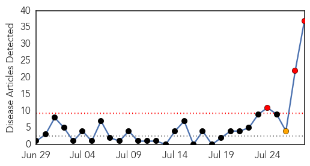

Hepatitis
30-Day Web Trend
3 alerts, 1 warnings

30-Day Twitter Trend
1 alerts, 0 warnings

Article Locations


Article Confidences

Top Articles:
- 0.998
- Lettuce, livers, berries and other leading sources of food poisoning
- 0.960
- Hepatitis C Cases Triple In Four States In The Last Seven Years While Treatment Remains Expensive
- 0.957
- TDH issues public health advisory on hepatitis C epidemic
- 0.925
- July 28 is World Hepatitis Day
- 0.909
- Tennessee Department of Health Issues Hep-C Advisory
- 0.859
- Over 100K Tennesseans unaware they have hepatitis C
- 0.850
- The case of Egypt
- 0.846
- Risk of Waterborne Disease Climbs in Syria
- 0.845
- Test, vaccinate against hepatitis, citizens told
- 0.841
- NewYork-Presbyterian: Combating viral hepatitis
- 0.831
- UN says Prevent Hepatitis: Act Now on World Hepatitis Day 2015
- 0.771
- Up to 18,000 Scots ‘don’t know they have Hepatitis C’
- 0.759
- Early Prevention Key to China's Fight against Hepatitis
- 0.755
- Natrona County Schools begin classes in September, parents encourged to get kids' vaccinations updated
- 0.743
- Hepatiis kill about 1,5 mln people annually
- 0.740
- Hepatiis kill about 1,5 mln people annually
- 0.732
- Hepatitis: a national health issue without accurate data
- 0.723
- On Celebrating The World Hepatitis Day -By Mustapha Saddiq
- 0.702
- World Hepatitis Day
- 0.695
- Free hepatitis-C treatment for poor on cards in UP
- 0.687
- An Asia-Pacific group calls Bangladesh to ‘act now’ against viral hepatitis
- 0.660
- Glasgow gears up to host first World Hepatitis Summit
- 0.657
- Hepatitis C warning for at-risk Scots ahead of Glasgow world summit
- 0.651
- Hepatitis B incidence drops in China: official - Xinhua
- 0.650
- 'Prevent hepatitis; Act now,' declares UN on World Day targeting hepatitis B and C
- 0.635
- Hepatitis-C poses real threat to lives of millions
- 0.616
- Rural docs want looser rules for Hepatitis C treatment
- 0.616
- Tennessee officials issue public warning over rise in hepatitis C cases
- 0.612
- Threat of viral hepatitis looms large in India
- 0.602
- Many hepatitis carriers who need treatment not getting it: official
- 0.565
- Nation Home
- 0.564
- WHO launches safe injection campaign in Egypt
- 0.547
- Why do we need a new hepatology journal?
- 0.544
- ‘40 million Indians have hepatitis B’
- 0.527
- Government Urged To Subsidise Hepatitis Treatment
- 0.502
- Where should money go to manage global health's 'silent epidemic'?
- 0.500
- Warning to all baby boomers
Top Tweets:
-
No tweets found for Jul 28, 2015
Unknown
30-Day Web Trend
0 alerts, 0 warnings

30-Day Twitter Trend
0 alerts, 0 warnings

Article Locations


Article Confidences

Top Articles:
- 0.997
- South Korean doctor may have exposed 1,000 people to MERS
- 0.988
- After MERS, Korea vows hospital culture reform
- 0.988
- South Korea declares end to MERS outbreak
- 0.982
- South Korea Declares 'De Facto End' To MERS
- 0.978
- South Korea declares end to MERS outbreak
- 0.977
- South Korea Finally Saw The Light At The End of Tunnel, "MERS Outbreak Is Over'
- 0.977
- Breaking UK News & World News Headlines
- 0.972
- What is Cyclospora cayetanensis? Why is it in my Cilantro?
- 0.971
- The country declares it is out of danger from virus
- 0.965
- Florida DoH provide some clarification on leprosy questions
- 0.952
- Vaccines & Viruses: Regulators approve world’s first malaria vaccine
- 0.947
- South Korea claims to be effectively free of MERS
- 0.925
- PM declares MERS outbreak over, no new cases for 23 days
- 0.917
- Chicago Tribune
- 0.917
- Chicago Tribune
- 0.917
- Chicago Tribune
- 0.917
- Chicago Tribune
- 0.917
- Chicago Tribune
- 0.917
- Chicago Tribune
- 0.917
- Chicago Tribune
- 0.917
- Chicago Tribune
- 0.905
- What's Causing Florida's Leprosy Cases?
- 0.891
- Brain-Eating Parasite Naegleria Fowleri Found In Drinking Water of Louisiana
- 0.883
- Deadly MERS Outbreak Virtually Over, South Korea Says
- 0.875
- CDC lifts travel warning to Seoul after 'de facto end' of MERS
- 0.869
- Texas and Wisconsin Cyclospora Linked to Mexican Cilantro
- 0.869
- KBS World Radio
- 0.866
- Iran, EU to start talks over issues including regional conflicts -TV
- 0.864
- Deadly kiss? Bug could spread deadly disease to the Lowcountry
- 0.824
- In-Depth: Tracking the National Health Insurance
- 0.820
- (MERS virus) South Korea says one patient still in hospital
- 0.803
- What You Need to Know About Outbreak Linked to Cilantro
- 0.784
- (LEAD) S. Korea declares de facto end to MERS outbreak
- 0.784
- Parasite Outbreak in Texas Traced to Mexican Grown Cilantro Tainted with Human Fecal Matter
- 0.775
- MERS officially over in South Korea
- 0.760
- Department of Health - Enumclaw Courier-Herald
- 0.748
- Quang Nam works to handle diphtheria outbreak
- 0.740
- Greater good must rule when it comes to diseases
- 0.725
- Sustaining Progress Against Polio in Ethiopia - Ethiopia
- 0.714
- Hong Kong tourists rush to grab early-bird trip deals after South Korea declared Mers-free
- 0.707
- Qatar- Women's Hospital cautions on décor
- 0.698
- Cyclospora Outbreak in Texas Increases Again
- 0.679
- Effect of Greece's Economic Crisis on People's Health
- 0.672
- Oral HPV cases on the rise and causing 70% of head and neck cancers
- 0.666
- South Korea declares end to MERS outbreak
- 0.663
- Effect of Greece’s Economic Crisis on Public Health
- 0.649
- Sorry, deze pagina kon niet gevonden worden.
- 0.623
- ORS to be given to 72,000 children in Salem
- 0.622
- DSHS: Testing recommended after spike in Cyclospora infections i - KLTV.com-Tyler, Longview, Jacksonville, Texas
- 0.619
- Patients face tough road to treatment for Lyme disease
Showing top 50 articles...
Top Tweets:
-
No tweets found for Jul 28, 2015